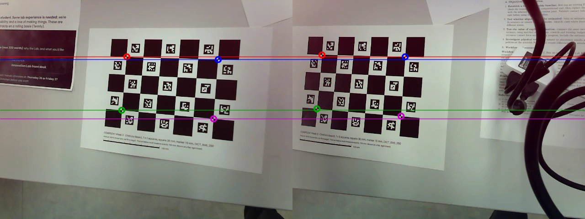
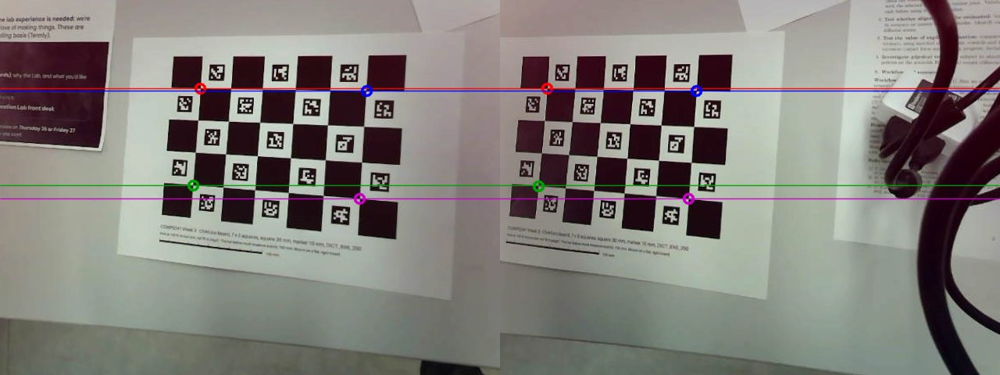
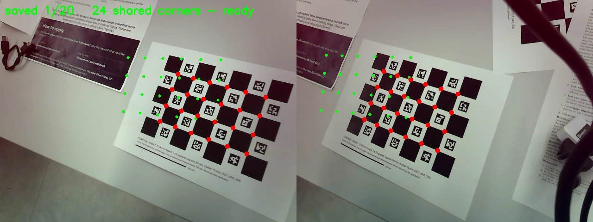
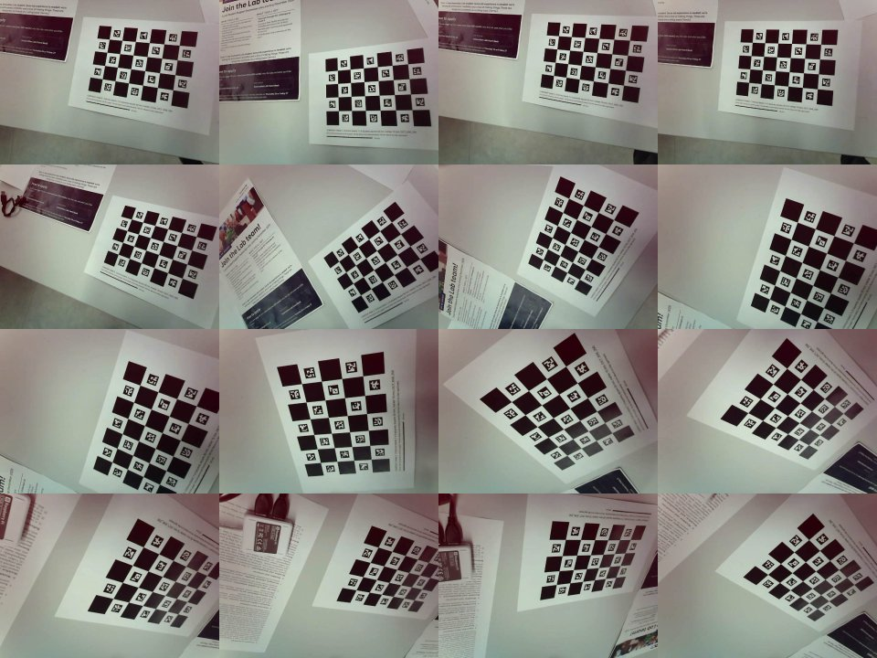
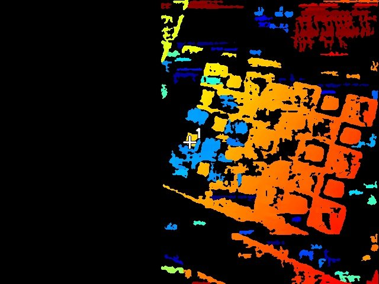
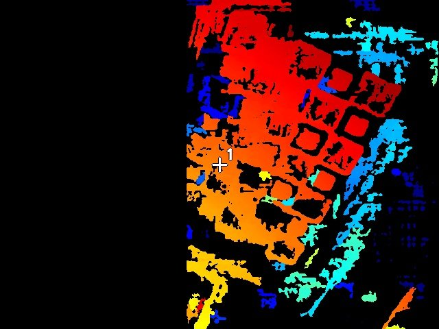
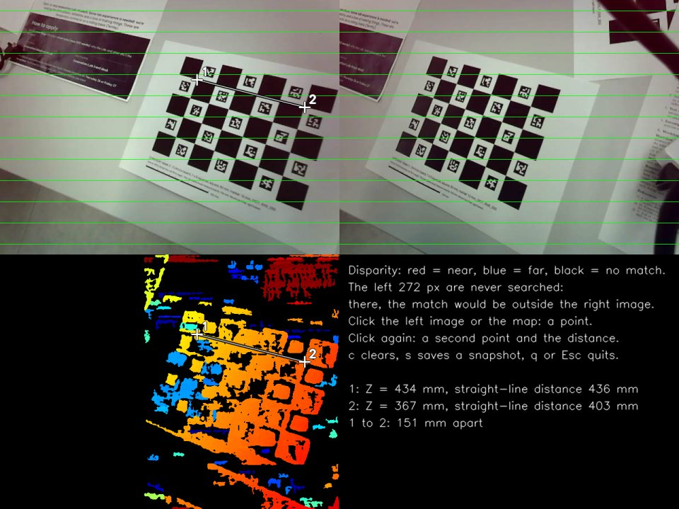

Stereo calibration
Two webcams side by side see the world from two viewpoints, like your eyes. Calibrate the pair and OpenCV tells you exactly where one camera sits relative to the other. Then every point both cameras see has a distance you can measure.
- You need
- Two USB webcams (ideally the same model) fixed side by side and the printed ChArUco board from the intrinsic calibration lab
- Code
calibration_tutorial/stereo/: capture pairs (keys or a GUI), calibrate, see depth- You get
- R and T between the cameras, the baseline in mm, rectified images and a depth map
- Before this
- Camera intrinsic calibration, option B (ChArUco)
Theory
What stereo calibration finds
In the intrinsic calibration lab, you found the intrinsic parameters of one camera: its camera matrix \(K\) and distortion coefficients. A stereo pair needs those for both cameras, plus one more thing: where the right camera is, relative to the left one. That is a rotation \(R\) and a translation \(T\), the extrinsic parameters of the pair.
\(X_\text{left}\) is a 3D point in the left camera's coordinate system (x right, y down, z forward, in millimetres here because the board is measured in millimetres). For two cameras side by side, \(R\) is close to the identity matrix and \(T \approx (-B, 0, 0)\). The length \(B = \lVert T \rVert\) is the baseline: the distance between the two optical centres. You can check it with a ruler.
Why the minus sign? A point straight in front of the left camera is to the left of the right camera, so its x coordinate is smaller (more negative) in the right camera's coordinates.
- Photograph the ChArUco board with both cameras at the same time, about 20 times (a pair each time).
- Calibrate each camera on its own, exactly as in the intrinsic calibration lab.
- Keep those intrinsics fixed and find \(R\) and \(T\) from the corners that both cameras saw:
cv2.stereoCalibrate. - Compute how to warp both images so that they look like a perfectly aligned side-by-side pair (rectification):
cv2.stereoRectify. - Match pixels along image rows and convert their horizontal shift (disparity) into distance:
cv2.StereoSGBM.
OpenCVcalib3d reference › pinhole camera model·cv2.stereoCalibrate·sample: stereo_calib.cpp
Depth from disparity
Imagine the ideal pair: two identical cameras, side by side, looking in exactly the same direction, with their image rows lined up. A point at distance \(Z\) appears in both images on the same row, but at different columns \(x_\text{left}\) and \(x_\text{right}\). The difference is the disparity \(d\). Similar triangles give its distance:
\(f\) is the focal length in pixels and \(B\) the baseline. For a calibrated pair, \(f\) is the focal length of the rectified images, P1[0, 0] (section 1.3): a little larger than \(f_x\) in \(K\), because rectification zooms in to hide black borders (637 px compared with 601 px for the sample pairs). Near points have a large disparity, far points a small one, and a point at infinity has \(d = 0\). Because \(Z\) depends on \(1/d\), a small error in \(d\) causes a rapidly growing error in \(Z\) (from differentiating \(Z = fB/d\)):
Twice as far away means four times the depth error. A longer baseline or a longer focal length helps, at the price of less overlap between the two views close up. Try it:
Real cameras are never that ideal pair: they are turned slightly towards or away from each other, one sits a little higher, and both have lens distortion. Calibration measures all of that so that it can be undone.
OpenCVbased on: Depth Map from Stereo Images › Basics·cv2.stereoRectify·cv2.reprojectImageTo3D
Epipolar lines and rectification
Take a pixel in the left image. The 3D point it shows lies somewhere on a ray from the left camera. Seen from the right camera, that ray is a line: the epipolar line. The matching pixel must be on it. So finding matches is a 1D search along a line, not a 2D search over the whole image.
The essential matrix \(E\) (in normalised camera coordinates) and the fundamental matrix \(F\) (in pixel coordinates) encode this geometry. cv2.stereoCalibrate returns both, but you rarely need them directly:
\(\tilde{x} = (u, v, 1)^\top\) are homogeneous pixel coordinates (after undistortion), and \([T]_\times\) is the skew-symmetric matrix representing the cross product with \(T\).
Rectification turns both cameras virtually, by small rotations \(R_1\) and \(R_2\), so that both look in the same direction and every epipolar line becomes an image row. It also gives both images the same new camera matrix. After rectification, the pair is the ideal pair of section 1.2, and matching is a search along one row.


Both photos: a real pair from two Arducam OV9782 webcams 142 mm apart, the board on a desk about 38 cm away.
cv2.stereoRectify returns everything needed:
| Output | Meaning |
|---|---|
R1, R2 | Rotation that turns each camera into the rectified orientation |
P1, P2 | 3 × 4 projection matrices of the rectified cameras: the same focal length \(f\) and principal point; P2[0, 3] \(= -f B\) |
Q | 4 × 4 matrix that turns a pixel and its disparity \((x, y, d)\) into a 3D point; the same as \(Z = fB/d\) |
roi1, roi2 | The region of interest (rectangle of valid pixels) in each rectified image |
OpenCVbased on: Epipolar Geometry › Basic Concepts·cv2.stereoCalibrate·cv2.stereoRectify·cv2.initUndistortRectifyMap
Prepare
What you need
- Two USB webcams, ideally the same model, so both give the same image size and similar images. Plug them into two different USB ports: two webcams sharing one USB hub often cannot stream simultaneously (due to USB bandwidth limits).
- A rigid mount. Fix the two cameras side by side, 6–12 cm apart, pointing the same way: tape or screw them to a ruler or a strip of wood. Once calibrated, they must not move relative to each other: if one is knocked, calibrate again.
- The ChArUco board from the intrinsic calibration lab: print charuco_board_A4.pdf at 100% (“Actual size”), check that its scale bar measures 100 mm, and fix it to something flat and stiff. ChArUco suits stereo because every corner has an ID: a corner counts as soon as both cameras see it, even when the board is partly out of one camera's view. The intrinsic lab's chessboard works too (the Calibration: chessboard mode of the capture GUI, or
python stereo_cap.py 0 1 chessboard), but a pair counts only when the whole board is in both photos: of the 18 rendered test views, 8 qualify with the chessboard and all 18 with ChArUco. - Fixed focus. Autofocus changes the focal length. If your webcams autofocus, switch it off in the camera's own software if you can, and keep the board at the distance you will use.
At 640 × 480, the A4 board's markers are 15 mm wide. They have to be about 15 pixels wide in the image to be read, so keep the board within about 50–60 cm, closer when it is tilted. For a rig that looks further away, print the board larger (A3) and change SQUARE_LENGTH and MARKER_LENGTH at the top of ../intrinsic/w3_calibration_charuco.py to your measured sizes.
It depends on how close you want to measure. The disparity of the nearest point, \(fB/Z_\text{min}\), should stay below about a quarter of the image width, or the matcher has to search a large part of every row (section 4.2). With 640-pixel-wide images (\(f \approx\) 550–600 px), that gives about 8 cm for objects 30 cm away and 13 cm at 50 cm. Further apart gives better depth far away (section 1.2), but less overlap close up.
A real example: two Arducam OV9782 webcams 14 cm apart, looking at a desk 30–40 cm below. They calibrated well (stereo RMS 0.54 px), but points on the desk shifted by more than 250 px between the two images, 40% of the image width, and the outer third of each image never saw the board in both cameras at once.
OpenCVtutorial: Create Calibration Pattern › Pattern Types, Pattern Size·cv2.aruco.CharucoBoard
Set up
Use the same environment as for intrinsic calibration. The stereo scripts use the same OpenCV and need version 4.7 or newer (OpenCV 5 works too):
Terminalconda activate comp0241 python -c "import cv2; print(cv2.__version__)"Get the code. The scripts are in the
calibration_tutorial/stereo/folder of the course repository, next to thecalibration_tutorial/intrinsic/folder whose ChArUco settings they share. If you cloned the repository for the intrinsic lab, pull the latest version; otherwise clone it:Terminal · first timegit clone https://github.com/WeianWang-OvO/comp0241_26.git cd comp0241_26/calibration_tutorial/stereoTerminal · already clonedcd comp0241_26 git pull cd calibration_tutorial/stereocomp0241_26/calibration_tutorial/calibration_tutorial/ ├── intrinsic/ │ └── w3_calibration_charuco.py the ChArUco board settings and detector (intrinsic lab, option B) └── stereo/ ├── stereo_cap.py capture pairs from two webcams (keys) ├── stereo_capture_gui.py the same with buttons, Undo and Auto save ├── stereo_calibration.py calibrate the pair, check it, save stereo_calibration.npz ├── stereo_depth.py rectified views and a depth map, live or from one pair ├── camera_names.py the cameras' names (macOS and Linux), used by the four above ├── docs/ this tutorial page (open docs/index.html in a browser) ├── sample_pairs/ 18 rendered pairs (left/, right/) with their true values └── stereo_pairs/ created when you capture: left/, right/, cameras.txt, and the calibration (stereo_calibration.npz) once you run itFind your cameras. Each camera has an index (0, 1, 2…), and a laptop's own camera usually takes 0. This saves one photo from each index, so you can see which is which:
Terminalpython stereo_cap.py listOutput · example on a Mac: two webcams (0 and 1) and the laptop camera (2)camera 0 Arducam OV9782 USB Camera (USB 21200000): 640x480, photo saved as camera_list/camera_0.jpg camera 1 Arducam OV9782 USB Camera (USB 21300000): 640x480, photo saved as camera_list/camera_1.jpg camera 2 FaceTime HD Camera: 640x480, photo saved as camera_list/camera_2.jpg camera 3: no camera camera 4: no camera camera 5: no cameraOpen the photos in
camera_list/to find the indices of your two webcams. On macOS and Linux, the list also shows each camera's name and USB port. Two identical webcams give almost the same photo, so check which is left in the capture window (section 3.1): stand behind the cameras, looking where they look, and hold your hand in front of the camera on your left. It must appear in the left half of the window; if not, swap the order of the two indices (in the GUI, press Swap left/right). If you still mix them up, the calibration tells you (section 4.1).
Skip to section 3.2 and run everything on sample_pairs/. These pairs are rendered: two virtual webcams 80 mm apart look at the board in front of a textured wall. Because they are rendered, sample_pairs/true_values.txt holds the true answer, so you can see how close the calibration gets.
Capture and calibrate
Capture pairs
python stereo_cap.py 0 1python stereo_capture_gui.py opens a window where you pick the two cameras by name (on macOS and Linux, with their USB port, so you can tell two identical webcams apart), the image size and the folder, then press Start. Scan checks which cameras produce images. After Start it asks you to check which camera is which: stand behind the cameras and hold your hand in front of the left one. If the LEFT image goes dark, press Confirm left/right; if the RIGHT one does, press Swap left/right. Nothing is saved before that, and with the board in view the window warns when the cameras look swapped. Save pair (or Space) saves, and Undo (U) removes the last pair. Pick your board with Calibration: ChArUco board or Calibration: chessboard. Wait until the board is still is on by default; untick it to save without the still check (stereo_cap.py: add nostill), and then hold the board steady yourself, because the two cameras don't take their photos at the exact same time.
Turn on Auto save and it saves automatically whenever the board has been held still for a moment in a new position, so you can hold the board with both hands. In Scene mode it saves any pair, every few seconds with Auto save, for your own stereo dataset. It writes the same left/ and right/ folders as stereo_cap.py.
With stereo_cap.py, a window shows both cameras side by side. Click it, then press c to save a pair and q or Esc to quit. Corners each camera sees are drawn in red, and the corners of pairs you already saved as green dots, so you can see which parts of each image still need the board.

Capturing at 640x480. Use the calibration only at this resolution.
Pair saved: stereo_pairs/left/pair_00.jpg and right/pair_00.jpg (1/20, 24 shared corners)
The board is moving: hold it still for half a second (or rest it on something) and press c again.
Pair saved: stereo_pairs/left/pair_01.jpg and right/pair_01.jpg (2/20, 24 shared corners)
Exiting...Two USB webcams are not synchronised: each captures frames on its own internal clock, and on Windows and Linux one camera's frames can lag the other's by a few frame times. If the board moves in between, the pair shows it in two different places, and the calibration learns the wrong baseline. So rest the board on something, or hold it very still. Both tools save a pair only after the board has been still for half a second: its corners moved less than 1.5 px from one frame to the next (the median over the corners, so one jittery corner doesn't count), and drifted less than 3 px in all. The status line shows how much the board is moving. You can switch the check off (untick Wait until the board is still, or add nostill), but then hold the board steady yourself.
They also note in cameras.txt which camera took the left photos and which board you used, and refuse to add pairs to a folder whose existing pairs were taken with swapped cameras, a different image size or a different board.
Which pairs to take
About 20 pairs, with the board 30–55 cm from the cameras. The same rules as for intrinsic calibration apply, now for both images: cover the whole frame of each camera, including the edges, and tilt the board. The 18 rendered sample pairs follow this list:
- 3 pairs in the middle, near and far (35, 45 and 55 cm).
- 4 pairs with the board near the four corners of the view, tilted by 15–20°.
- 2 pairs at the far left and far right: the board may be partly out of one camera. That's fine with ChArUco, and these pairs give that camera its edge corners.
- 2 pairs tilted 30° up and down, 2 tilted and turned, 3 rotated in-plane (45° and 90°), 2 close and tilted.
Here is a real session for comparison: 16 pairs from two Arducam webcams looking down at a desk. The board is tilted and turned in many ways, but it always stays where both cameras see it: right of centre in the left camera's images below, left of centre in the right camera's. No corner reaches the left third of the left image or the right third of the right image, and stereo_calibration.py warns about exactly that. Two more pairs, one at the far left and one at the far right, would fix it.

What the script does
Code · 2 partsTwo photos, as close in time as possible/Shared corners, and is it still?
# Grab both frames first and decode them afterwards: this keeps the two photos as close in time as possible
grabbed = [cam.grab() for cam in cameras]
frames = [cam.retrieve()[1] if ok else None for cam, ok in zip(cameras, grabbed)]grab() tells a camera to take a frame; retrieve() decodes it. Grabbing both before decoding either keeps the two photos as close in time as two unsynchronised webcams allow.
# Find the board in both photos, the corners both cameras see, and how much the board moved
detections = [detect_board(cv2.cvtColor(frame, cv2.COLOR_BGR2GRAY), board, fast=True) for frame in frames]
both = common_corners(detections[0], detections[1], board)
now = [corners_by_id(d) for d in detections]
motions = [corner_motion(n, p) for n, p in zip(now, previous)]
previous = now
drifts = [corner_motion(n, a) for n, a in zip(now, anchor)]
if not all(m is not None and m <= max_motion for m in motions):
still_since = None
elif still_since is None or not all(d is not None and d <= max_drift for d in drifts):
still_since, anchor = time.time(), now # (re)start the still period here
still = not need_still or (still_since is not None and time.time() - still_since >= still_time)common_corners (from stereo_calibration.py) keeps the corner IDs found in both photos; a pair needs at least 6. The stillness check compares the corners with their positions in the previous frame of the same camera, and with where they were when the board stopped, using the median movement; the still period starts again if either is too large. With nostill, the check is skipped.
OpenCVCharucoDetector.detectBoard·tutorial: Detection of ChArUco Boards › ChArUco Board Detection
Run the calibration
Your own pairs, in stereo_pairs/:
python stereo_calibration.pyOr the rendered sample pairs:
python stereo_calibration.py sample_pairsThe first line of the output names the board: the one noted in cameras.txt when you captured, or else the one the script finds in the photos. To choose it yourself, add charuco or chessboard, e.g. python stereo_calibration.py stereo_pairs chessboard. With the chessboard, both photos of a pair number the 28 corners in the same order: OpenCV starts at a black corner square, and because the intrinsic lab's 5 × 8 board has asymmetric corner colours (rotating it by 180° swaps black and white corners), the orientation is unambiguous.
Add nogui to skip the window at the end. Here is the run on the sample pairs:
Board: ChArUco (found in the photos; add chessboard to use the other)
…
pair_00.jpg: left 24 corners, right 24, both 24
pair_01.jpg: left 22 corners, right 24, both 22
pair_02.jpg: left 24 corners, right 24, both 24
…
Used 18 left and 18 right views, 18 pairs, image size (640, 480)
Left camera: RMS 0.065 px
K1 =
[[600.69432984 0. 323.76611879]
[ 0. 600.04305442 238.18711399]
[ 0. 0. 1. ]]
D1 = [ 0.07700839 -0.20062599 0.00071672 -0.00029824 0. ]
Right camera: RMS 0.065 px
K2 =
[[595.56013503 0. 315.89905767]
[ 0. 595.0042116 244.32786411]
[ 0. 0. 1. ]]
D2 = [ 0.05929843 -0.16457097 -0.00042458 0.00067699 0. ]
Stereo RMS reprojection error: 0.070 px
R =
[[ 0.99956535 -0.00408165 -0.02919673]
[ 0.00389836 0.99997235 -0.00633208]
[ 0.02922176 0.00621551 0.99955363]]
T = [-80.08691147 0.50431433 1.56277589] mm
Baseline |T|: 80.1 mm (check it with a ruler between the centres of the two lenses)
Angle between the two cameras: 1.73 degrees
…
Per pair, after rectification: row difference (px) board distance (mm)
mean worst from disparity / from pose
pair_00.jpg 0.05 0.11 450.4 / 450.5
pair_01.jpg 0.07 0.25 558.0 / 558.4
pair_02.jpg 0.06 0.17 340.9 / 340.9
…
Worst row difference: 0.30 px. Matching searches along rows, so keep it below about 1.5 px.
Both distance columns use the same board, so they cannot catch a bent board or a wrong square size: the ruler check of the baseline can.
Saved sample_pairs/stereo_calibration.npz
Rectified pair pair_00.jpg saved as sample_pairs/rectified_example.jpgWhat the script does
Code · 5 partsStep 1 · Corners both cameras saw/Step 2 · Each camera on its own/Step 3 · R and T/Step 4 · Rectify/Step 5 · Check it
def common_corners(left, right, board='charuco'):
"""Board points and pixels of the corners BOTH cameras saw, in the same order, or None if too few.
left and right are detect_board() results: (object_points, image_points, ids, ...).
"""
if left[0] is None or right[0] is None:
return None
if board == 'chessboard' and sum(CHESSBOARD_SIZE) % 2 == 0: # a board that looks the same turned round
right = same_order(left, right)
ids_left, ids_right = left[2].ravel(), right[2].ravel()
common = np.intersect1d(ids_left, ids_right)
if len(common) < MIN_COMMON:
return None
pick_left = [np.flatnonzero(ids_left == i)[0] for i in common]
pick_right = [np.flatnonzero(ids_right == i)[0] for i in common]
obj = left[0][pick_left]
xy = obj.reshape(-1, 3)[:, :2]
if np.linalg.matrix_rank(xy - xy.mean(axis=0), tol=1e-6) < 2: # all on one line: no use
return None
return obj, left[1][pick_left], right[1][pick_right]Each photo goes through the ChArUco detector of the intrinsic lab, which returns every corner with its ID and its position on the board. For the stereo step, only the IDs found in both photos are kept, in the same order, so that the n-th left pixel and the n-th right pixel are the same board corner.
The rank test drops pairs whose shared corners are collinear (all lying on one line, which gives no 2D geometric constraint).
With the chessboard, the detector numbers the 28 corners 0–27, starting at a black corner square. The intrinsic lab's board (5 × 8 squares) swaps its black and white corners when turned by 180°, so both photos number the corners alike. Only a board that looks identical when rotated by 180° (an even total of squares across width and height) can be numbered from opposite ends; for that case same_order keeps the order in which every corner shifts by about the same amount from one photo to the other.
OpenCVCharucoDetector.detectBoard·Board.matchImagePoints·tutorial: Detection of ChArUco Boards › ChArUco Board Detection·cv2.findChessboardCorners
# Step 2: Calibrate each camera on its own (ret = RMS reprojection error in pixels, as in Week 3).
flags = cv2.CALIB_FIX_K3 if FIX_K3 else 0
rms_left, K1, D1, _, _ = cv2.calibrateCamera(obj_left, img_left, image_size, None, None, flags=flags)
rms_right, K2, D2, _, _ = cv2.calibrateCamera(obj_right, img_right, image_size, None, None, flags=flags)Exactly the intrinsic calibration, once per camera, with every photo in which that camera found the board, including those the other camera missed. CALIB_FIX_K3 keeps \(k_3 = 0\), as the intrinsic lab's chessboard script does.
OpenCVcv2.calibrateCamera·tutorial: Camera Calibration › Calibration·sample: calibrate.py
# Step 3: Stereo calibration. K and distortion stay fixed; it finds R and T, which take a point from
# left-camera coordinates to right-camera coordinates: X_right = R @ X_left + T (in mm, like the board).
criteria = (cv2.TERM_CRITERIA_COUNT + cv2.TERM_CRITERIA_EPS, 100, 1e-6)
rms, K1, D1, K2, D2, R, T, E, F = cv2.stereoCalibrate(
obj_both, img_both_left, img_both_right, K1, D1, K2, D2, image_size,
criteria=criteria, flags=cv2.CALIB_FIX_INTRINSIC)CALIB_FIX_INTRINSIC keeps K and the distortion from step 2 and solves only for \(R\), \(T\) and each pair's board pose. That leaves fewer unknowns, so the pair needs fewer photos, and the intrinsics can't absorb errors that belong to \(R\) and \(T\). The returned RMS error is over both images of every pair.
OpenCVcv2.stereoCalibrate·sample: stereo_calib.cpp·source: calibration.cpp
# Step 4: Rectification. R1 and R2 turn each camera so that both look the same way, P1 and P2 are the
# new camera matrices, and Q turns (x, y, disparity) into a 3D point. alpha=0 keeps only valid pixels.
R1, R2, P1, P2, Q, roi_left, roi_right = cv2.stereoRectify(K1, D1, K2, D2, image_size, R, T, alpha=0)alpha=0 zooms the rectified images so that they contain only valid pixels, with no black borders: best for matching. alpha=1 would keep every original pixel instead.
for name, obj, il, ir in zip(pair_names, obj_both, img_both_left, img_both_right):
rl = cv2.undistortPoints(il, K1, D1, R=R1, P=P1).reshape(-1, 2)
rr = cv2.undistortPoints(ir, K2, D2, R=R2, P=P2).reshape(-1, 2)
dy = np.abs(rl[:, 1] - rr[:, 1])
z_disparity = np.mean(f * baseline / (rl[:, 0] - rr[:, 0]))
_, rvec, tvec = cv2.solvePnP(obj, il, K1, D1) # the board's pose seen from the left camera
points = (cv2.Rodrigues(rvec)[0] @ obj.reshape(-1, 3).T + tvec).T
z_pose = np.mean((R1 @ points.T)[2]) # distance along the rectified viewing directionEach shared corner is mapped into the rectified images with undistortPoints. Its two rows must agree (dy), and its disparity gives a distance by \(Z = fB/d\). The script compares that distance with the board's 3D pose estimated from the left camera alone using Perspective-n-Point (solvePnP), which doesn't use the second camera at all.
OpenCVcv2.undistortPoints·cv2.solvePnP·cv2.Rodrigues·sample: stereo_calib.cpp
It saves everything in stereo_calibration.npz in the folder of the pairs (stereo_pairs/ or sample_pairs/), so a run on the samples never replaces your own calibration. The first pair, rectified with green rows, goes next to it as rectified_example.jpg.
Check and measure
Read your result
| Number | Sample pairs | True value | What to expect with webcams |
|---|---|---|---|
| Each camera's RMS error | 0.065 px | – | Below about 0.5 px, as for intrinsic calibration |
| Stereo RMS error | 0.070 px | – | Below about 0.5–0.7 px. Much larger: a pair taken while the board moved, or a camera moved during capture |
| Baseline \(\lVert T\rVert\) | 80.1 mm | 80.0 mm | Within 1–2 mm of what a ruler gives between the centres of the two lenses |
| \(T\) | (−80.1, 0.5, 1.6) | (−80.0, 0.5, 1.0) | Mostly x, and negative. Positive x: left and right are swapped (the script warns) |
| Angle between the cameras | 1.73° | 1.77° | A few degrees. Large angles still work but reduce the overlap |
| Worst row difference | 0.30 px | – | Below about 1.5 px. Larger: depth gets noisy or fails |
| Distance from disparity vs from pose | within 0.5 mm | – | Within about 1% at 50 cm |
The sample pairs are rendered, so their errors are smaller than any real pair will give. The true focal lengths are 602 and 596 px; the calibration finds 600.7 and 595.6 px (sample_pairs/true_values.txt lists all true values). For comparison, 16 real pairs from two Arducam webcams gave 0.36 px for each camera, 0.54 px stereo RMS, rows within 1.3 px (under the 1.5 px limit), and the two distance columns within 1%.
Below the table, the script prints warnings when something needs your attention:
| Warning | What it means |
|---|---|
no corner reached the … of the left image | No pair put the board in that part of the image, so the lens distortion there can only be extrapolated. Add pairs with the board there; a board seen by only part of the other camera is fine. |
the stereo RMS error is above 1 px | Some pairs are bad, usually because the board moved between the two photos. The table marks suspect pairs with <-, and the script names the worst one. |
<- after a pair | Its corners are more than 1.5 px apart in row after rectification, or its two distances differ by more than 2%. One bad pair can skew R and T, causing good pairs near the threshold to be flagged too. Delete only the pair the script names as furthest over a limit, from both folders, and run again. Repeat while one pair stands out and the stereo RMS is above about 0.7 px. |
the 'left' camera is on the right | All pairs were taken with left and right swapped. Swap the names of the two folders, delete cameras.txt (it still names the old left camera; the next pair you capture writes it again), and run again. |
in pair_… the cameras look the other way round | Those pairs were taken with the cameras swapped (identical webcams can change index when unplugged and reconnected). Delete them. |
one camera is turned by … degrees | One camera is upside down or on its side. Mount both the same way up. |
the cameras are above each other | A vertical rig; stereo_depth.py needs them side by side. |
Measure the distance between the centres of the two lenses with a ruler. If \(\lVert T\rVert\) differs by more than a few millimetres, something is wrong: the board's square size in the settings doesn't match your print (all of \(T\) scales with it), the board is bent, the cameras moved during capture, or several pairs were taken while the board moved. The two distance columns can't catch the first two: both come from the same board. Measuring between lens centres with a ruler is only accurate to a millimetre or two; for a sharper test, measure a ruler in 3D with stereo_depth.py.
OpenCVcv2.stereoCalibrate·cv2.Rodrigues·tutorial: Camera Calibration › Re-projection Error
See depth
Live, with the same indices as for capture (it uses stereo_pairs/stereo_calibration.npz):
python stereo_depth.py 0 1To measure closer than the default 300 mm, add the closest distance in millimetres:
python stereo_depth.py 0 1 min=250Or one pair of photos (it uses the calibration in their folder):
python stereo_depth.py sample_pairs/left/pair_00.jpg sample_pairs/right/pair_00.jpgThe window shows the rectified pair with green rows on top and the disparity map below: red is near, blue is far, black has no match. The colours span the searched range, so only points close to min_distance come out red. It is scaled to fit a laptop screen. With photos, it uses the calibration in the folder the photos come from; add the path of another .npz file to override it, and pass nogui to save the results without opening a window.
Click on the left image or on the disparity map to measure a point: the two have the same pixels. It shows the depth Z, measured along the viewing direction (what a tape measure gives against a wall parallel to the line between the two lenses), and the straight-line distance from the left camera, which is longer away from the image centre. Click a few pixels inside an object's outline: right on its edge, the depth can belong to what is behind it. Click a second point to also get the distance between the two points, in 3D; a third click starts again, and c clears both. Each click also prints its numbers in the Terminal. Press s to save a snapshot, and q or Esc to quit.
Calibration sample_pairs/stereo_calibration.npz: baseline 80.1 mm, f 636.8 px. Searching disparities 0-176 px: distances from about 290 mm (add min=... to change; closer points get wrong, far distances). The left 176 px of the map cannot be matched.
At the image centre: Z = 449 mm, straight-line distance 449 mm
Matched 64 % of the pixels; their median Z is 1383 mm (from 447 to 1417 mm for 90 % of them)
Saved depth_rectified.jpg and depth_disparity.jpgTwo disparity maps from the real capture, with the board on a desk 31–43 cm away. The cameras are 142 mm apart, so measuring down to the default 300 mm takes a search over 272 px, and the black band on the left is that wide.


Code · 2 partsThe matcher/From disparity to millimetres
# Disparity d = x_left - x_right of the same point; its distance is Z = f * baseline / d. The closest point
# we want to measure has the largest disparity, so the matcher searches up to that (a multiple of 16).
num_disparities = int(np.clip(16 * np.ceil(f * baseline / min_distance / 16), 16, 1024))
matcher = cv2.StereoSGBM_create(minDisparity=0, numDisparities=num_disparities, blockSize=block_size,
P1=8 * block_size ** 2, P2=32 * block_size ** 2, uniquenessRatio=10,
speckleWindowSize=100, speckleRange=2, mode=cv2.STEREO_SGBM_MODE_SGBM_3WAY)StereoSGBM (Semi-Global Block Matching) compares small blocks (block_size × block_size pixels) of the left image with blocks on the same row of the right image, shifted by 0 to numDisparities pixels, and keeps the best match smoothly across the image.
The script sets numDisparities from your calibration so that points down to min_distance (300 mm, or min=…) can be found. The left edge of the map stays black over that width: there, the matching pixel would be outside the right image.
A point closer than min_distance doesn't come out black: because its true disparity exceeds numDisparities, the matcher picks a wrong, smaller shift and reports it as much further away.
OpenCVbased on: cv2.StereoSGBM_create·tutorial: Depth Map from Stereo Images › Code·source: stereosgbm.cpp·sample: stereo_match.py
def disparity_near(disparity, x, y, r=3):
"""Disparity at pixel (x, y), steadied by its neighbours in the (2r+1) x (2r+1) square around it: the median of
those on the same surface (within 2 px of its own disparity). If (x, y) itself has no match: the median of the
square's matched pixels, or None if fewer than half of them matched."""
x, y = int(round(x)), int(round(y))
square = disparity[max(y - r, 0):y + r + 1, max(x - r, 0):x + r + 1]
matched = square[square > 0]
own = disparity[y, x]
if own > 0: # near an object's edge, part of the square sees what is behind it: leave that out
return float(np.median(matched[np.abs(matched - own) <= 2]))
return float(np.median(matched)) if 2 * matched.size >= square.size else None
def point_at(disparity, x, y):
"""3D point (mm, rectified left camera) at pixel (x, y), or None without a match."""
d = disparity_near(disparity, x, y)
if d is None:
return None
X, Y, Z, W = Q @ np.array([x, y, d, 1.0]) # Z / W is the same as f * baseline / d
return np.array([X, Y, Z]) / WOne pixel's disparity can be slightly off, or missing, so disparity_near takes the median over a 7 × 7 square around the click. It only uses the pixels within 2 px of the clicked pixel's own disparity: near an object's edge, part of the square sees what is behind it. If the clicked pixel has no match, it uses all the matched pixels in the square, and gives up if fewer than half of them matched.
Q from stereoRectify turns a pixel and its disparity into a 3D point in homogeneous coordinates; dividing by W gives millimetres. For a rectified side-by-side pair its Z is exactly \(Z = fB/d\); the straight-line distance is the length of the whole vector. cv2.reprojectImageTo3D(disparity, Q) does the same for every pixel at once: a point cloud.
OpenCVbased on: cv2.reprojectImageTo3D·cv2.stereoRectify·sample: stereo_match.py

Lay a ruler flat in view, about as far away as the things you want to measure. Put two marks on it 200 mm apart that you can click precisely, such as a cross drawn on each of two sticky notes: at 640 × 480 the ruler's own numbers are only a few pixels tall. Keep both marks out of the black band on the left of the map, and click their centres on the left image. Averaged over a few tries, the window should say 198–202 mm (within 1%); 196 or 204 on average means the scale is 2% off.
Anything that repeats evenly along a row, such as the ruler's ticks or a row of the board's squares, looks alike at several shifts, and the matcher can pick one a whole period off. That point then gets a much larger Z: in sample pair_10, part of the board reads about 2 m, beyond the wall. So check that both Z values make sense before you trust the distance.
Every coordinate of a 3D point is proportional to the baseline: \(Z = fB/d\), and across the image \(X = (x - c_x)\,Z/f = (x - c_x)\,B/d\). So a baseline 2% too short makes every length 2% too short: 196 mm instead of 200. The ruler doesn't depend on the board, so it catches what the calibration's own checks can't: a wrong square size in the settings, or a bent board. One pixel is about \(Z/f\) millimetres (0.6 mm at 400 mm with \(f\) = 640 px), so click carefully and measure a few times.
OpenCVcv2.reprojectImageTo3D·cv2.stereoRectify·calib3d reference › pinhole camera model
Matching needs texture. The board's plain black squares, its white margin and a plain wall look the same at every shift, so they stay black or noisy: in the maps above, the insides of the black squares are holes or wrong blue patches, while the white squares, which hold the markers, match well. Point the cameras at a textured scene (books, a cluttered desk) to see a full map.
Troubleshooting
| Message or symptom | Likely cause | Fix |
|---|---|---|
Error: unable to read camera N | Wrong index, camera used by another app, no permission, or both webcams on one USB hub | Run python stereo_cap.py list; close Zoom/Teams; use two USB ports. On macOS, allow access for your terminal or VS Code under System Settings → Privacy & Security → Camera |
the cameras give different image sizes | Two different webcam models, or one ignores the requested 640 × 480 | Use two webcams of the same model, or set frame_size at the top of stereo_cap.py to a size both support |
The board is moving every time | The board isn't held still for half a second, or the image is noisy in poor light | Rest the board on something; add light; press c again |
The pairs in stereo_pairs/ were taken with … as the LEFT camera | The cameras are swapped compared with the earlier pairs (identical webcams can swap indices when unplugged and reconnected) | Swap the order of the indices, or empty the folder to start again |
The pairs in stereo_pairs/ are W x H, but the cameras now give … | You changed the image size | Capture at the old size, or empty the folder |
Both cameras must see the board (or … the whole chessboard) | The board is outside one camera's view, too far away, or too blurry | ChArUco: move it towards the middle and closer (within about 50 cm). Chessboard: the whole board must be in both photos, so move it towards the middle or a little further away |
WARNING: the 'left' camera is on the right, or stereo_depth.py stops with the same message | Left and right are swapped | Swap the names of stereo_pairs/left and stereo_pairs/right, delete stereo_pairs/cameras.txt, and calibrate again; swap the order of the indices from now on |
The images look swapped (stereo_depth.py) | The two cameras or photo paths were passed in the wrong order | Swap the two indices or file names |
WARNING: the cameras are above each other | The rig is vertical | Mount the cameras side by side for stereo_depth.py |
| Baseline far from the ruler | Board square size doesn't match the print; cameras moved; pairs taken while moving | Measure the printed squares and set them: SQUARE_LENGTH and MARKER_LENGTH at the top of ../intrinsic/w3_calibration_charuco.py (ChArUco) or CHESSBOARD_SQUARE at the top of stereo_calibration.py (chessboard); fix the cameras; capture again |
Stereo RMS above 1 px, or pairs marked <- | A few bad pairs (moved board, blur), or a camera moved during capture | Delete the pair the script names as furthest over a limit from both folders (same name) and run again; repeat if needed. If that doesn't help, capture again with the rig clamped down |
Depth map mostly black, or Almost nothing matches | Little texture, the cameras moved since calibration, or swapped indices | Look at a textured scene; recalibrate after any knock; check the indices |
| A near object reads much too far | It is closer than min_distance | Add min=… with a smaller distance |
No calibration at …/stereo_calibration.npz | The calibration hasn't run on that folder | Run stereo_calibration.py on it first, or pass the path to your .npz file |
Option B needs OpenCV 4.7 or newer | An older version of OpenCV | pip install -U opencv-contrib-python inside your environment |
Check yourself
Q1The calibration gives \(T = (-62.0,\ 0.4,\ -0.8)\) mm. How far apart are the cameras, and which way round are they?
About 62 mm (\(\lVert T\rVert \approx 62.0\)). \(T_x\) is negative, so the right camera really is to the right of the left one: they are the right way round.
Q2Why does the script calibrate each camera first and then call stereoCalibrate with CALIB_FIX_INTRINSIC?
Each camera's intrinsics are best found from all of its own photos, including those the other camera missed. Fixing them leaves only \(R\), \(T\) and the board poses to find, which is better conditioned (more numerically stable) and stops the intrinsics from absorbing errors in \(R\) and \(T\).
Q3\(f = 640\) px, \(B = 80\) mm, and a point has a disparity of 40 px. How far away is it, and how uncertain is that if \(d\) is off by 0.5 px?
\(Z = 640 \cdot 80 / 40 = 1280\) mm. \(\Delta Z \approx Z^2 \Delta d / (fB) = 1280^2 \cdot 0.5 / 51200 \approx 16\) mm.
Q4You double the baseline. What happens to the depth error at 1 m, and to the closest distance you can measure with the same numDisparities?
The error halves (\(\Delta Z \propto 1/B\)). Every disparity doubles, so the closest measurable distance doubles too (or you need twice the numDisparities), and close objects may no longer be in both views.
Q5After rectification, matching corners differ by 3 px in row. Name two likely causes.
A camera moved after (or during) the capture; pairs taken while the board moved; poor intrinsics, e.g. no photos near the image edges; the left and right files of a pair don't belong together.
Q6Someone bumps the right camera. Do you need to redo the intrinsic calibration, the stereo calibration, or both?
The stereo part (\(R\), \(T\)) certainly: it describes how the cameras are mounted. The intrinsics belong to each camera and stay valid unless the focus or zoom changed. Since the script does both from the same pairs, you simply capture new pairs and run it again.
Going further
Ideas to try
- A point cloud.
points = cv2.reprojectImageTo3D(disparity, Q)gives an (x, y, z) for every pixel. Keep the pixels with a valid disparity and save them, with their colours, as a.plyfile to open in MeshLab or Open3D. - Cleaner disparity. The contrib module's
cv2.ximgproc.createDisparityWLSFilterfills holes and sharpens edges using the left image.cv2.StereoBM_createis faster but noisier. - Synchronised cameras. A stereo camera module (both sensors on one board, one USB connection) takes both photos at the exact same time, so moving scenes work too. Depth cameras such as Intel RealSense or Orbbec do the whole pipeline in hardware.
- More than two cameras. OpenCV 5 adds
cv2.calibrateMultiview. The ROS 2 camera_calibration package calibrates stereo pairs with a GUI. - Further reading. R. Hartley and A. Zisserman, Multiple View Geometry in Computer Vision, chapters 9–11 (epipolar geometry and the fundamental matrix); the OpenCV calib3d reference for
stereoCalibrate,stereoRectifyandStereoSGBM. - Kalibr. Kalibr (ETH Zurich) is the long-standing research tool for calibrating several cameras together (they need not all see a common area, but each camera's view must overlap a neighbour's) and cameras with an IMU (inertial measurement unit), including the time offset between them. It usually works with an AprilGrid board, runs on ROS 1 (most easily in its Docker image), and has not been updated since early 2024.
Sources and credits
This lab draws on the sources below. Most sections also link to the OpenCV pages they draw on.
- Intrinsic calibration tutorial and slides. The lab continues the intrinsic calibration tutorial, which follows the slides “Camera Intrinsic Calibration” by Luchen Li, and reuses its ChArUco board and detector in step 1 of section 3.2.
- Photos and sample pairs. The photos on this page were taken by the course leader with two Arducam OV9782 webcams. The pairs in
sample_pairs/are rendered by the course's own software from two virtual webcams, the lab's ChArUco board and a randomly generated wall texture. - OpenCV sample stereo_calib.cpp. Apart from calibrating each camera first,
stereo_calibration.pyfollows its order:stereoCalibrate,stereoRectify, theninitUndistortRectifyMapandremapto show the rectified pair side by side with green horizontal lines across it (rectified_example.jpg). The sample comes from the book Learning OpenCV: Computer Vision with the OpenCV Library by G. Bradski and A. Kaehler (O'Reilly, 2008). - OpenCV sample stereo_match.py. The matcher in
stereo_depth.py(section 4.2) uses itsuniquenessRatio(10) andspeckleWindowSize(100) and divides the output by 16 as it does. The point-cloud suggestion in section 5.1 (reprojectImageTo3D, the valid pixels with their colours, a.plyfile for MeshLab) follows the sample. - OpenCV tutorials Depth Map from Stereo Images and Epipolar Geometry. Sections 1.2 and 1.3 explain disparity (\(Z = fB/d\) from similar triangles) and the epipolar line (so the search for a match is 1D) as their Basics and Basic Concepts sections do.
- OpenCV tutorials Detection of ChArUco Boards, Camera Calibration and Create Calibration Pattern (the last by Laurent Berger, Alexander Panov and Alexander Smorkalov) and sample calibrate.py. Step 1 of section 3.2 uses the intrinsic lab's ChArUco detector, which makes the calls of the ChArUco tutorial and of
calibrate.pyin the same order, and step 2 makes the Camera Calibration tutorial'scalibrateCameracall once per camera. The board advice in section 2.1 draws on Create Calibration Pattern. - OpenCV reference pages. The
stereoCalibrateandstereoRectifypages give the conventions and formulas of sections 1.1 and 1.3, and thestereoCalibratepage recommends the method of steps 2–3 of section 3.2: calibrate each camera first, then passCALIB_FIX_INTRINSIC. The matcher'sP1andP2(section 4.2) are the values theStereoSGBMpage suggests (8 and 32 × channels ×blockSize²). TheVideoCapture.grabpage describes the grab-then-retrieve approach of section 3.1. - References in the OpenCV documentation. The
calibrateCameradocumentation cites Z. Zhang, “A flexible new technique for camera calibration”, IEEE TPAMI 22(11):1330–1334, 2000, and J.-Y. Bouguet, Camera Calibration Toolbox for MATLAB, 2004. TheStereoSGBMdocumentation says it implements a modified version of the algorithm of H. Hirschmüller, “Stereo processing by semiglobal matching and mutual information”, IEEE TPAMI 30(2):328–341, 2008, using the sub-pixel metric of S. Birchfield and C. Tomasi, “A pixel dissimilarity measure that is insensitive to image sampling”, IEEE TPAMI 20(4):401–406, 1998, in place of mutual information. - Licence. OpenCV is open source, released under the Apache License 2.0.